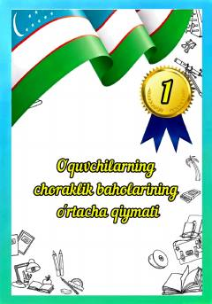

OCO'quvchilarning choraklik baholari va musobaqalardagi ishtirokini baholash uchun materiallar.
Mazkur hujjat o'quvchilarning choraklik baholari o'rtacha qiymatini hisoblash va ta'lim jarayonidagi yutuqlarini sarhisob qilish uchun mo'ljallangan. Material o'qituvchilar va maktab ma'muriyati uchun uslubiy qo'llanma vazifasini bajaradi.